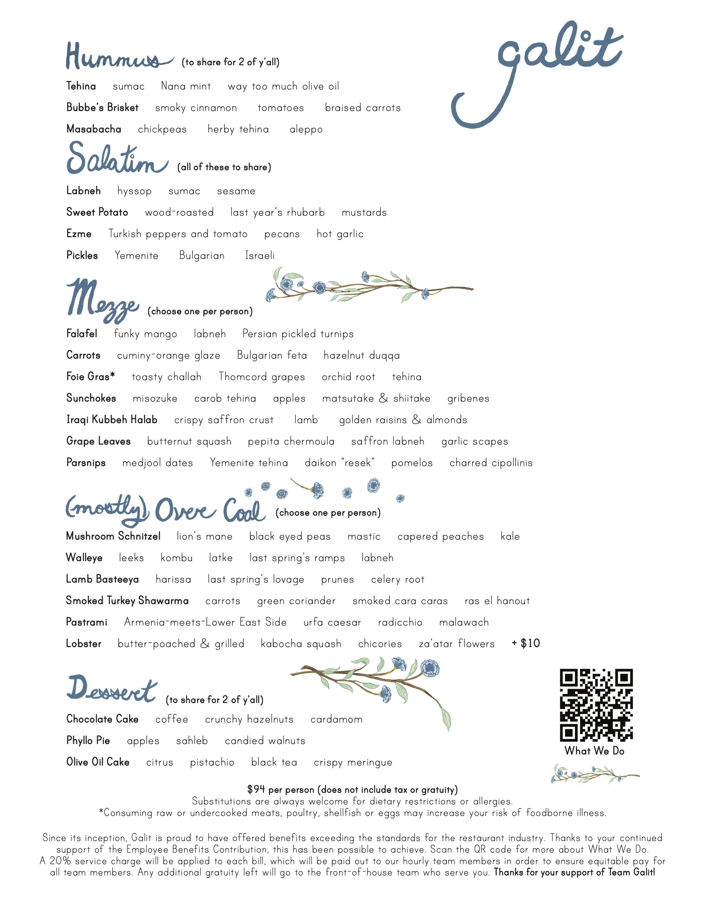
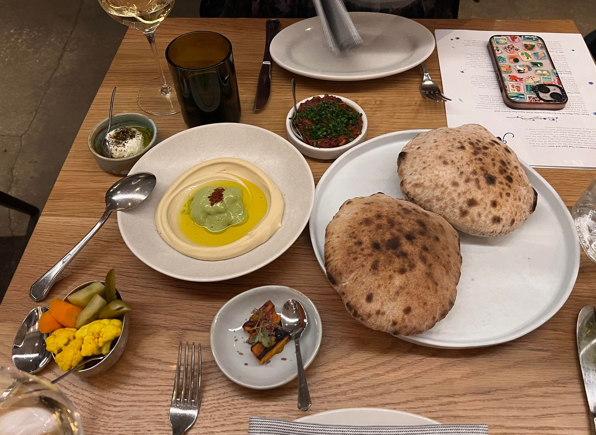
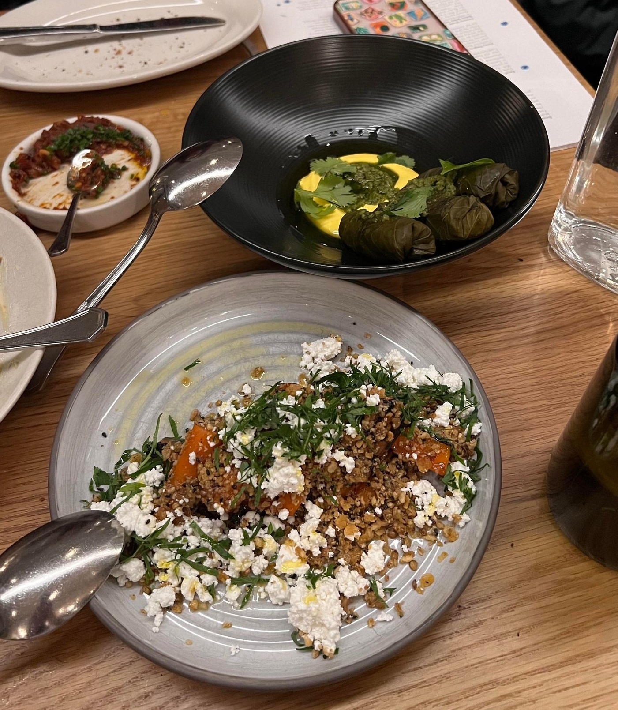
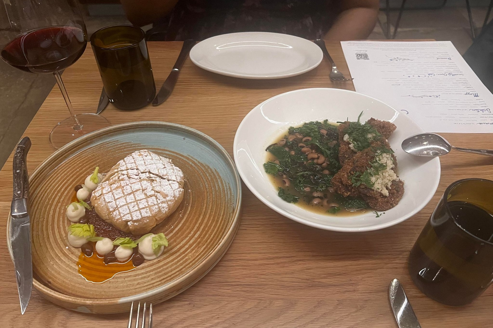
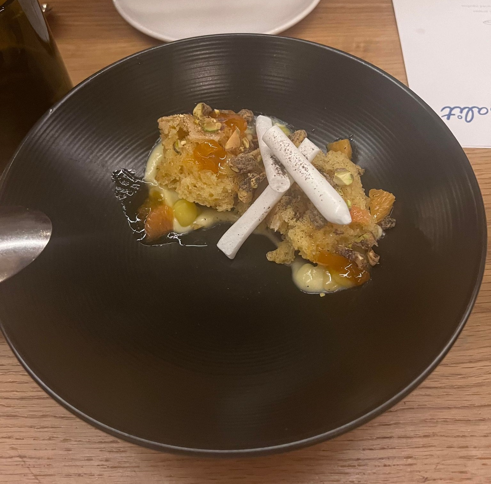
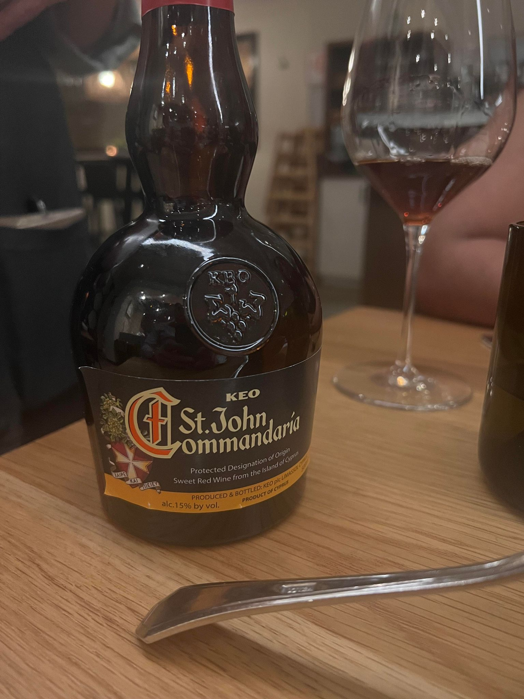

Galit ⭐
March 7, 2024
Menu
Since we had never been here, we ordered the “4-course choose your own adventure” and the wine accompaniment. To be honest, I have not tried many of these foods and spices before, so I wasn’t quite sure what anything was going to taste like.

Hummus & Salatim
To start things off, we had the masabacha hummus, labneh, sweet potato, ezme, and pickles.
My first thought when these plates came our were: “Wow, look at the size of that pita bread!” We were quite hungry since our reservations were for 8:45pm, so everything immediately looked very appetizing.
I was most interested in trying the sweet potato, the dist closest to me, so I tore a piece of the pita bread and ate it together with the sweet potato. It tasted fairly normal but tasty, and so did the pickles. I really like pickles and don’t get the opportunity enough to try pickled vegetables other than cucumbers.
The labneh was what I tried next, and with the pita it tasted kind of similar to butter on a roll but flavored a little more sweet and sour than butter.
Whitney liked the Ezme more than I did, but she loves tomato more than me. It didn’t have a strong tomato flavor though and with the other spices it balanced out the other dishes pretty well.
Finally, we had the masabacha hummus in the middle which was delicious. I don’t normally eat hummus since I haven’t been sure if I liked it or not, but this dish made me realize maybe I would like some types of hummus in my diet. Chickpeas are very nutritious and the consistency of the masabacha went perfectly with the remainder of my pita.

The wine pairing for this meal was Keush, ‘Ultra’ Blanc de Noir Brut Nature from Armenia. I’m not really an expert when it comes to wine tasting so I can’t really comment too much on any of the specific flavors from the wines I had but this one was memorable for being light and bubbly, almost like a champagne.
Mezze
Next, for mezze (appetizers), we ordered the grape leaves and carrots.
My initial impression is I really don’t know what either of these is going to taste like, but the grape leaves immediately look more appetizing so I grabbed one, dipped it in the yellow saffron sauce and gave it a try.
To my palate, it was very bitter initially. It tasted very healthy and full of nutrients though, and although I don’t know what grape leaves taste like normally they seemed to me to be very fresh and authentic. I split the third one with Whitney after trying the carrots and that half tasted much less bitter, especially after dipped in more of the saffron sauce.
The carrots had an overwhelming flavor, maybe the piece I initially got had a ton of duqqa, which has warm spices. That is definitely not a flavor that is common in American cuisine, so in the moment I was really struggling to come up with a term on how I could describe the flavor of the carrots. The spices were very aromatic, warm, and earthy. There was so much covering the carrots and the flavor was so strong that I had to leave some spices on the plate, but overall very tasty.

The wine pairing for this meal was Yarden ‘Golan Heights’ Chardonnay Galilee from Armenia.
Over Coal
For our main course, I ordered the lamb basteeya and Whitney got the mushroom schnitzel. She just went vegetarian in January 2024 and this was the only vegetarian option on the menu, so we did not share these dishes with each other, other than I tried one bite of the mushroom.
The lamb was delicious, I regret not trying some of the sauces on my plate but I definitely feeling the effects of three glasses of wine after the waitress had brought us a glass of Chateau Musar Gaston Hochar to enjoy with our entrees.

The lamb was delicious, and the powdered sugar (at least that’s what I think it was - it was very sweet) topping was a break from the slight bitterness of the carrots and grape leaves. I tried a bite of the mushrooms, the outer coating of those was also nice and crispy, although the mushroom was a little more sour than I was expecting.
I know that Lion’s Mane mushroom is supposed to be a natural mushroom good for boosting memory though, but I’ve only ever really tried it through supplements. There’s a really cool coffee shop in the West Loop called Sawada Coffee that gives you the option to add Lion’s Mane mushroom to your coffee and it’s delicious - maybe that will be the next review. Stay tuned!
Dessert
For our dessert, we got the olive oil cake. I wanted to try the phyllo pie - maybe next time! The crispy meringue was interesting, obviously very light and like biting into a cloud. I’m not sure if I had had olive oil cake before this but it was definitely sweeter than I was expecting.

The final wine pairing was a special one, it was a wine has been brewed in the same method since biblical times which involves adding new barrels of wine to older barrels that are never fully emptied. The result was a very sweet and deliciously aged dessert wine called Keo St. John Commandaria that was very enjoyable to pair with the olive oil cake.

Rating
Overall score: 4.6 out of 5.0 stars
Would definitely go back if I ever have the opportunity!